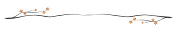
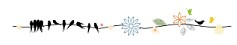

故宫的太和殿其实也叫做金銮殿，是宫中面积最大，规格最高的宫殿。
太和殿前的铜龟和铜鹤，象征着江山永固，万寿无疆。还有就是这对龟和鹤身体里是空的，主要是用来焚香的功能。龙头龟相传是龙之九子中第九个儿子。龙龟代表着荣誉和地位，是能耐、负重、长寿、权威的象征。铜仙鹤人们常把它象征幸福、吉祥、长寿和忠贞。太和殿前安一座仙鹤，寓意就是希望自己可以得道成仙，能永世统治帝国。

太和殿之上为建筑形式最高的重檐庑殿顶，是最高等级殿堂的屋顶形式屋脊两端安有“鸱吻”，是用13块中空的黄彩琉璃瓦件拼成的（古建上称“十三拼”）。关于大吻的说法不止一种，但在康熙皇帝心里，实实在在是祈望它能降雨防火的。
除此之外，在廊檐上还有一些装饰，此殿最多，有十个，最头上的不算叫仙人骑凤，后面依次为龙、凤、狮子、海马、天马、斗牛、猰貐、獬豸、蚢狶、栓你，其寓意为祥瑞齐聚，国泰民安，一片祥和。所以，此殿为太和殿，即最为和谐之状态，自会感得此十种祥瑞出现
太和殿内，位于大殿中央的皇帝宝座，正式名称叫：髹金漆云龙纹宝座。宝座通体雕以金龙，盘绕13条金龙，椅背正中是一条正龙，椅后为雕龙金漆七扇屏风。宝座上方藻井中的龙俯首向下。
大殿中上方的巨大匾额，上面书写着四个大字:建极绥猷。意思就是指:皇帝君临天下，上对苍天，下对黎民百姓，都负有神圣的使命，既须承天而建立法则，又要抚民而顺应大道。

太和殿中一共有72根柱子，其中位于正中央的六根柱子最为特殊。这六根柱子用纯度为99.998黄金制成的，金箔包裹，柱子上是蟠龙图案。两侧的6根金柱上，6条龙的头朝向中间，所有的龙都围绕着宝座，焦点正在宝座之中的皇帝身上，正所谓“时乘六龙，以御天也”，这六根大金柱寓意着帝王统御时势的运转。